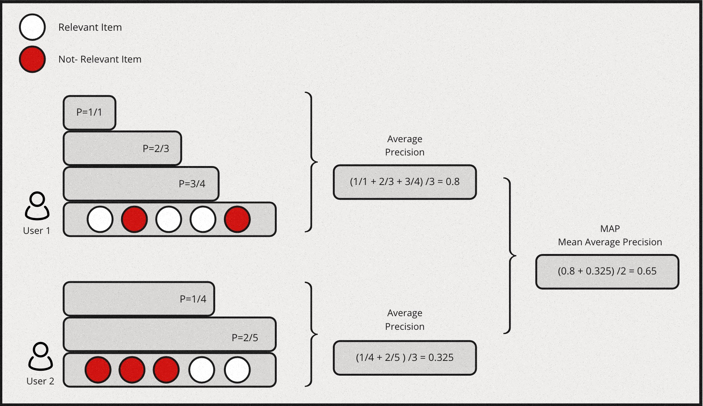

A Quick Recap on Ranking Evaluation metrics
Over the years, Several metrics have been proposed and widely used for evaluating a ranking model. If we were to summarise them and list the most popular metrics it boils down to this:
| Metric Type | Metric |
|---|---|
| Binary Relevance | Mean Average Precision (MAP) |
| Binary Relevance | Mean Reciprocal Rank (MRR) |
| Graded Relevance | Normalized Discounted Cumulative Gain (NDCG) |
| Graded Relevance | Expected Reciprocal Rank (ERR) |
In general, binary metrics only consider relevant & irrelevant items, while graded metrics consider the ranking among relevant items. The degree of relevancy matters in this case when scoring a list of items.
Mean Average Precision (MAP)
MAP is a measure based on binary label of relevancy. To compute this first we define precision at k for a given query \(P@k(q)\) as: \[P@k(q) \equiv \frac{\sum_{i=1}^k r_i}{k}\] for an ordered list of prediction \(r_i\) for all \(k\) items. \(ri=1\) if it is relevant and 0 otherwise.Then we define the average precision given a query \(AP(q)\) at \(k\) items as: \[AP(q)@k \equiv \frac{1}{\sum_{i=1}^k r_i} \sum_{i=1}^k P@i(q) \times r_i\]
Mean Average Precision is just the mean of \(AP(q)\) for all queries:
\[MAP \equiv \frac{\sum_{q=1}^Q AP(q)}{Q}\]
Also, MAP is an order sensitive metric because of the term \(r_i\) in the calculation of AP. It is essentially taking the average of precision at each ranking position and penalizing the precision at positions with irrelevant item by strcitly setting them to zeroes.
Here is a simple example for computing MAP:

Mean Reciprocal Rank (MRR) & Expected Reciprocal Rank (ERR)
Reciprocal rank metrics focus mainly on the first correctly predicted relevant item in a list. Given a list of items, and say \(r_i\) is the rank of the highest ranking relevant item & if the the 2nd item is the first relevant item in the list, then the reciprocal rank for this query would be \(\frac{1}{2}\). By extension, each query will have a reciprocal rank. Hence, Mean reciprocal rank is essentially the average of reciprocal rank for all the queries, which would be represented as follows:
\[MRR \equiv \frac{1}{Q} \sum_{i=1}^Q\frac{1}{r_i}\]
Expected reciprocal rank tries to quantify how useful a document at rank \(i\) conditioned on the degree of relevance of documents at rank less than \(i\) are. The intution behind this is based on the empirical findings from web search task, that the likelihood a user will examine the document at rank \(i\) is dependent on how satisfied the user was with previously observed documents in the list.
Lets assume the probability of a user finding the result is satisfied at position \(i\) in a list of items is denoted as \(R_i\) & the likelihood of a session for which the user is satisfied and stops at position \(r\) is: \[\prod_{i=1}^{r-1}(1 - R_i)R_r\]
Now we can model \(R_i\) such that it is an increasing function of relevance:
\[R = R(g) \equiv \frac{2^g - 1}{2^{g_{max}}}\]
where \(g\) is the graded relevance such that \(g \in \{0, 1, ..., g_{max}\}\) & \(g = 0\) implies an irrelevant document and \(g = g_{max}\) implies a relevant document.
Now we can define ERR as follows:
\[ERR \equiv \sum_{r=1}^n\frac{1}{r}R_r\prod_{i=1}^{r-1}(1-R_i)\]
Here \(\frac{1}{r}\) is treated as a utility function \(\tau(r)\) that satisfies \(\tau(1) = 1\) and \(\tau(r) \rightarrow 0\) as \(r \rightarrow \infty\).
Note that ERR is a metric on a list with a single query, To evaluate results from multiple queries, we will need to further average ERRs among queries.
Here is a simple example for computing MRR:

Normalized Discounted Cumulative Gain (NDCG)
Normalized Discounted Cumulative Gain (NDCG) is one of the most popular metric for measuring the quality of a set of ranked items in search or recommendations. If we were to break the assumptions made by this metric in simple terms, it would be as follows:
- Cumulative Gain: Very relevant items are more useful than somewhat relevant items which are more useful than completely irrelevant items.
- Discounting: Relevant items are more useful when they appear earlier in a list of ranked items.
- Normalization: The ranking results should be irrelevant to the query performed.
Let’s define Discounted Cumulative Gain at position \(k\) as follows:
\[DCG@k \equiv \sum_{i=1}^k\frac{2^{l_i} - 1}{log_2(i + 1)}\]
where \(l_i\) is the grading of relevance at rank \(i\). Intutively, the numerator is simply an increasing function of relevance, the more relevant the higher. This is the gain from each item. The denominator is a decreasing function of ranking position, this is the discounted component of the metric. Collectively, higher relevance gains more score, but the lower it is ranked the higher also the discount. Essentially, the metric will prefer higher relevant item to be ranked higher, which is the desired outcome.
NDCG is then defined as:
\[NDCG@k = \frac{DCG@k}{IDCG@k}\]
where \(IDCG@k\) is the Ideal DCG@k given the result. DCG@k is calculated by sorting the given list of items by its true relevance labels. and IDCG@k is the maximum possible DCG@K value one can get given a ranked list of items.
Here is a simple example for computing NDCG: